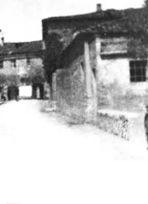

Quercegrossa (Ricordi e memorie)
CAPITOLO XI - COSE D'ALTRI TEMPI
Torna all'Indice Cose d'altri tempi
Vai all'Indice dei Capitoli
Servizi
(L'Acqua)
(Illuminazione)
(La Posta)
(Il Telefono)
(La Strada)
(Trasporti pubblici)
(Mezzi privati)
(Botteghe)
La Posta
Lo "svegliarino" di don Rigatti.
Alla fine dell'Ottocento le Poste italiane, pur con tante contraddizioni dovute a differenziazioni regionali e a locali disfunzioni, svolgevano un accettabile servizio pubblico. Nel 1862 con la Legge Postale Nazionale si riorganizzavano le poste dei disciolti stati affermando alcuni concetti basilari come quello di servizio pubblico e la creazione del monopolio statale, con conseguenti applicazioni pratiche come l'abolizione di tutte le concessioni private. Tra l'altro si stabiliva il principio dell'inviolabilità delle lettere.
Andando avanti, troviamo nel 1874 la nascita dell'U.P.U. (Unione Postale Universale) a Berna in Svizzera con la piena adesione dell'Italia. Nel 1889 poi, con la nascita del Ministero delle Poste e Telegrafi, si concludeva la riorganizzazione del servizio postale italiano in chiave moderna.
Questa funzionale struttura che, ripeto, con qualche neo, operava egregiamente e impiegava nei primi anni del Regno oltre 10.000 dipendenti fra agenti, procaccia e postini, alla fine di quel secolo Ottocento non era ancora riuscita ad attivarsi a Quercegrossa, ma erano in funzione le colletterie di Fonterutoli, Castellina in Chianti e Vagliagli e a queste si rivolgevano gli abitanti del nostro paese con tutte le scomodità immaginabili visti i tempi e le distanze. Ma la carenza maggiore del servizio era... l’inesistenza del servizio. Infatti, come leggeremo, i postini di queste colletterie non avevano nessun obbligo di consegnare lettere e dispacci ai destinatari di Quercegrossa e dintorni e si limitavano, proprio per fare un favore e quando ne avevano voglia, a lasciare a caso la posta in qua e là pregando di consegnarla al mittente (possiamo intuire quanto il sistema fosse precario e insicuro), oppure il povero popolano di Quercegrossa o di Petroio doveva recarsi a ritirarla presso questi uffici, se sapeva che c'era, perché nessuno aveva l'obbligo di avvisarlo. La nostra era una zona per così dire "esentata" dal servizio postale. Si era di fronte quindi alla necessità di un urgente, per non dire improrogabile, intervento degli Enti preposti per rimediare a una situazione non più sostenibile.
Ma grande illusione ed errore sarebbe quello di pensare che l'Ufficio postale di Quercegrossa sia stato istituito per il responsabile e spontaneo moto delle Amministrazioni comunali oppure delle Poste di Siena, enti ai quali spettava l'organizzazione nel territorio di detto servizio, così come era avvenuto per Castelnuovo, Vagliagli, Monteriggioni e altre località.
Questa sensibilità mancò a questi Enti e soltanto la caparbia e insistente azione della popolazione irritata da tanta trascuratezza si conquistò l'apertura di una colletteria postale che possiamo far risalire agli anni tra il 1905 e il 1910. Quanto sopra affermato deriva dalla conoscenza di due lettere di don Adriano Rigatti, parroco di Quercegrossa, il quale si fa portavoce dei parrocchiani e con toni decisi si rivolge prima al sindaco di Castelnuovo il 24 dicembre del 1899 e poi, visto inutile il tentativo, direttamente al Ministro delle Poste e Telegrafi nel 1902, al quale presenta la situazione di bisogno e chiede l'istituzione della Colletteria postale a Quercegrossa. Apparve chiara fin da allora quella politica di volontaria trascuratezza, a vantaggio dei capoluoghi, che le Amministrazioni comunali cominciarono a dimostrare verso un territorio situato ai margini non soltanto geografici dei loro confini, ma, peggio ancora, dei loro investimenti e scelte, costringendo quelle popolazioni ad assumere autonome iniziative di lotta per ottenere tutti quei servizi che il progresso avanzante richiedeva per stare al passo con i tempi e che solo in grave ritardo si concretizzarono a Quercegrossa: così con la Posta come per la Scuola, l'Illuminazione, l'Acqua, il Telefono, i Trasporti, il Cimitero ecc. La scarsità della popolazione che si potrebbe invocare a giustificare detto comportamento sarebbe un argomento facilmente contestabile perché anche in quel 1902 il servizio richiesto interessava circa 850 abitanti compresi nella parrocchia di Quercegrossa e parte di Basciano e Lornano. La conta degli abitanti ci dà una somma non trascurabile per quel tempo ma dispersa in numerose case e poderi perdeva di peso politico. Il tono acceso di don Rigatti è quindi pienamente giustificato di fronte all'insipienza delle controparti che si nascondono sempre dietro alla scusante delle casse vuote, e la sua affermazione "che è un fatto contro la Giustizia il tenere una vostra popolazione, come questa, senza il servizio postale", denuncia apertamente e coraggiosamente l'ingiustizia e il danno che subiscono dette popolazioni. E' sua premura aggiungere, casomai il Sindaco non avesse ancora capito "come gli altri Comuni limitrofi abbiano pensato a queste comodità, solo il nostro Comune non se ne sia dato per inteso".
Per completare il quadro dirò che in quell'incessante sviluppo delle Poste erano già attivi fin dal 1888 il servizio a domicilio, il recapito pacchi e poi cartoline, espressi e lettere varie, senza considerare l'utilissimo libretto di risparmio postale che fin dal 1876 rappresentava una utile banca per le popolazioni rurali. Un servizio completo e vitale che però non riguardava Quercegrossa perché i procaccia di Castellina, Fonterutoli e Vagliagli non avevano nessun obbligo alla consegna mancando loro ogni responsabilità sulla posta del nostro paese. Di conseguenza eravamo di fronte a ritardi, perdite e disguidi non più sopportabili da nessuno. E, attenzione, don Rigatti non si limitò a richiedere, ma suggerì la soluzione del problema risolvibile con la collocazione di una cassetta postale e la consegna del plico della corrispondenza "al nostro appaltino Oretti Giuseppe in Quercegrossa e lui pensare alla distribuzione delle lettere e giornali". In tanto sentito impeto il parroco minaccia anche il ricorso "ai pubblici giornali" per denunciare che le corrispondenze dirette a Quercegrossa non sono sicure.
Ma quella che sembrava una logica ed economica soluzione era forse un problema troppo grande da risolvere per un Comune come Castelnuovo e ancor più per la Direzione Provinciale delle Poste; quella lettera al Sindaco "che serva da svegliarino" fece la fine di tante altre finite nel cassetto e le richieste espresse vennero totalmente ignorate.
Nell'attesa del miracolo che non avvenne, trascorsero gli anni 1900 e 1901 e giunti a metà 1902 fu compiuto l'ultimo passo suggerito dalla disperazione: il ricorso diretto al Ministro.
Alla petizione fu allegato un foglio con la firma di tutti a capofamiglia.
Il contenuto di quest'ultima lettera, scritta con tono pacato che rifugge la polemica, mira più a informare il Ministro per metterlo quasi di fronte all'inevitabilità di una soluzione che non poteva essere che positiva, con argomentazioni chiare e inequivocabili che per la loro natura non potevano essere ignorate.
Il Solventi detto "Sodero"
Certamente trascorsero alcuni anni da quel 1902, ma alla fine la battaglia della Posta fu vinta e la frazione ebbe, pur con un mostruoso ritardo, la possibilità di ricevere e spedire lettere e cartoline con certezza e non "per combinazione" come deplorava don Rigatti. Da questo momento procedo nel racconto attingendo esclusivamente a ricordi tramandati o vissuti che riguardano il primo periodo. Ricordi così distanti tanto da essere incompleti e frammentari, ed è difficile porre nell'anno esatto del loro accadimento. Il primo addetto, chiamato procaccia secondo l'uso del tempo, fu un certo Solventi di Castellina, il quale tenne l'ufficio fino al 1925 circa. Il suo incarico consisteva nel ritirare il plico postale e consegnare l'altro contenente la posta in partenza; questo accadeva due volte al giorno al passaggio della diligenza o corriera, mattina e sera. Se volevi lettere e giornali dovevi presentarti di persona all'ufficio o mandare un tuo delegato perché il Solventi non effettuava la consegna a domicilio, ma non sappiamo se questa mansione rientrasse tra i suoi doveri. A chi abbisognava di un servizio doveva spesso cercare il Solventi perchè, dopo il ritiro del plico, abbandonava la stanzetta e si dirigeva all'osteria dove passava ore a sedere sullo sgabello in compagnia di Norina e a chiacchiera con le massaie. Questo atteggiamento non piaceva alla gente e, come vedremo, la sua superficialità nel condurre la funzione gli creerà dei grossi problemi. Il malumore vero e proprio ebbe inizio durante la Prima guerra mondiale, quando l'arruolamento di numerosi soldati provocò l'arrivo di centinaia di lettere e fu riscontrato lo smarrimento di esse da parte di alcune famiglie; col tempo il dubbio divenne certezza e le chiacchiere sul disservizio si sprecarono, ma nessuno ebbe il coraggio di denunziare il fatto o di richiamare il procaccia a svolgere con responsabilità il proprio lavoro. Per anni, a guerra finita, si ricordò l'accaduto alimentato anche dal timore che la scomparsa di corrispondenza continuasse.
A questo andazzo mise fine tra il 1923 e il 1924 lo squadrismo fascista con a capo il Focardi e il Burroni, entrambi delle Badesse. Tutto era stato organizzato per far cessare questa storia e anche per dare un avvertimento al Solventi che si dice non fosse in sintonia con la dottrina fascista e stentava ad adeguarsi alle nuove regole. La squadra, una mattina, all'improvviso entrò di prepotenza nell'ufficio postale dove, mettendo tutto sottosopra, trovò molte lettere non consegnate e le scaraventò in piazza a dimostrazione e giustificazione dell’assalto; come si ricorda, il Solventi se la cavò con un po' di paura e nient'altro. Si dice ancora che conseguenza di questa spedizione fu il processo e la revoca del mandato, ma sembra anche che l'età avanzata abbia convinto il postino a lasciare il suo incarico pubblico ormai irrimediabilmente compromesso

La finestra con inferiata sulla destra fa parte dello stanzino, del quale si distingue la porta, che dava sulla strada principale, chiamato pomposamente Ufficio postale. Sullo sfondo la bottega-osteria di Quercegrossa. Questo ambiente fu fornito dai Mori per collocarvi il primo servizio di posta dato in appalto al Solventi di Castellina. Poi, verso il 1925, l'ufficio venne trasferito nel locale a fianco della bottega con ingresso dalla porta che parzialmente si intravede sulla sinistra. Dello stanzino postale e del contiguo capanno a un solo piano non rimangono tracce essendo tutta la costruzione stata demolita negli anni Trenta per far posto alla Privativa e alle nuove abitazioni Solo il grande forno rimase dov'era. La foto è del 1933.
La consegna a domicilio
Terminata senza nessun rimpianto l'esperienza Solventi, i maggiorenti di Quercegrossa, certamente su richiesta dell'Ente postale, si guardarono intorno per trovare una valida soluzione casalinga anche in vista di un potenziamento del servizio che contemplasse, come era logico, la consegna a domicilio. Non fu difficile individuare il soggetto adatto in Carlo Brogi, esercente e bottegaio, il quale oltretutto aveva anche il requisito richiesto dell'invalidità. Quando il Vienni del Castello lo contattò la sua fu una risposta positiva e da quel giorno nessuno ebbe più motivo di lamentarsi del servizio postale. Mai scelta fu migliore di quella: tutte le garanzie di serietà e responsabilità vennero sempre corrisposte da come tutti in famiglia assunsero questo onere a loro affidato e l'onorarono per ben quarant'anni fino al 1971, espletando tutte quelle piccole e grandi mansioni richieste dal servizio.
Abbandonato il vecchio sgabuzzino, il controllo e smistamento della posta avveniva nella stanza situata a sinistra guardando la bottega. Qui Carlo o Dante o Gina selezionavano, dividevano, affrancavano e preparavano il sacchetto della posta che la corriera avrebbe ritirato, e predisponevano i viaggi per la distribuzione e il ritiro in tutti i poderi vicini e lontani del territorio loro assegnato. In direzione di Siena arrivava fino al Colombaio, a nord-ovest raggiungeva la fattoria di Topina, ad ovest Basciano e Petroio-Passeggeri a est. In alcune di queste più distanti località esisteva una cassetta postale (Topina e Basciano), svuotata giornalmente dai Brogi. Per soddisfare il rito quotidiano della consegna, tutti i componenti della famiglia si trasformarono a turno e nel tempo in portalettere: "Si consegnava anche tre volte al giorno"; ma si può dire che non erano due o tre volte al giorno perché capitava "anche di notte in bicicletta con Duilia Losi e altre si andava a portare lettere" rammenta Lara, in pratica era una distribuzione senza tempo, dettata solo dallo scrupolo di consegnare subito una corrispondenza: a quei tempi unico modo per comunicare con familiari e amici o per affari. La posta giungeva col postale delle cinque, il tempo di sistemarla e poi partivano.
Il Brogi Dante controllava la posta e lei andava a portarla in bicicletta. Iniziò a consegnare lettere a dieci, undici anni e in questa foto ne dovrebbe avere tredici. Fu scattata dal fattore di Vignaglia nel 1933. Settimia, la sorella di Dante che ai tempi del Solventi, all'età di cinque anni, andava a frucare nella spazzatura dell'ufficio postale a cercarvi lapis e gomme usate, tra i tanti lavori, la bottega e la pulizia di locali pubblici, svolgeva anche quello di portare la posta e "...la sera, quando iniziava a far tardi, mi facevo accompagnare da un cittino del Forni di nome Enzo". Una bella bicicletta dotata di portapacchi anteriore con la sua borsa di cuoio per le lettere. Il suo arrivo era particolarmente atteso da tutte quelle famiglie che avevano parenti lontani. Recapitò notizie spedite alle famiglie dai loro congiunti dopo anni di silenzio portando una gioia immensa.
D’inverno era già buio e le lampadine delle bici illuminavano scarsamente una strada dove il breccino alto richiedeva tanta attenzione onde evitare cadute; pedalavano sulle strade di Passeggeri, di Santo Stefano, della Magione ecc., e sempre in due per prudenza. Sarebbe stato ragionevole e comodo, e nessuno avrebbe avuto da ridire, portare la posta al mattino successivo, ma non rientrava nella mentalità del tempo impostata alla rigorosa logica di un efficiente servizio. Se vogliamo comprendere appieno l'utilità di questo, soprattutto in assenza del telefono, possiamo pensare a quanto gradito e a volte confortante fosse sentire la voce di Settimia o Lara che chiamavano: "C'è posta", sapendo che poteva essere una lettera del figliolo militare o della figlia lontana o dell'amico. Perdurava sempre il sistema giornaliero del duplice ritiro e consegna da parte del postale: quello della mattina alle ore nove circa lasciava la posta da Firenze, quello delle cinque pomeridiane lasciava a sua volta la posta da Siena ed entrambe le volte ritirava quella in partenza. Quante ansiose attese alla vista di quei sacchi color avana con le strisce rosse! Attese molte volte andate deluse: "Quando arrivava la posta c'erano sempre ad aspettare, specialmente le giovani"; ma capitò anche che la lettera tanto invocata, tanto voluta, quasi con disperazione, non giungesse mai e ben altro messaggio fu portato dai carabinieri a tante famiglie, come si può comprendere dall'elenco dei nostri caduti nelle due guerre.
Dante Brogi con la grossa borsa per la consegna della posta dopo una nevicata nell’anno 1956. Con lui, in posa, a destra Attilio Bernardeschi e Virgilio Carusi a sinistra.
Oltre al periodo delle guerre, caratterizzato da un enorme aumento degli arrivi e partenze, era nelle ricorrenze che si aveva un movimento eccezionale di lettere, cartoline e dispacci vari; sotto le feste di Natale in particolar modo le cartoline riempivano sacchi pieni che ingolfavano l'Ufficio e ritardavano la consegna: "Da non saper dove metterle". Non si può dimenticare l'importante servizio svolto per il Sarrocchi, il proprietario di Passeggeri, il quale essendo senatore del Regno godeva di quei privilegi postali riservati al suo ufficio. Tutte le sere veniva da Passeggeri il dipendente Barbucci a prendere il sacchetto della posta riservata per il senatore e lasciava l'altro delle missive in partenza, il tutto discretamente sigillato. Nella buona stagione potevi vedere il senatore in persona, in tenuta estiva con cappello bianco a larghe tese e la giacca dello steso colore che, alla guida del calesse, faceva la sua apparizione a Quercegrossa a motivo della posta.
Col tempo quel corridoio adibito ad ufficio venne sistemato convenientemente e reso funzionale al bisogno: un alto bancone di legno divideva il sufficiente ambiente ed era sormontato da uno spesso cristallo che serviva da divisorio col pubblico. Appoggiato al muro di fronte vedevi uno scaffale con tante cassettine, non molto alte né troppo larghe, dove era segnata in ognuna la località di destinazione e nelle quali Gina inseriva la lettera appena giunta. Dante, nella sua spolverina celeste, col pesante timbro annullava i francobolli delle lettere in partenza con forti colpi sul tavolo che rimbombavano seccamente; era il caratteristico rumore udibile in tutti gli uffici postali che da bambino ti faceva venire la voglia di fare il postino.
Le nuove Poste
Passarono tanti anni e col progresso si rese necessario ricercare un nuovo locale per i nuovi servizi. Era il 1963/64, quando in una stanza al piano terreno nel palazzo davanti alla vecchia scuola costruito da Silvio Landi detto Picciola, fu ricavato il nuovo, moderno ufficio postale. Dante vi si trasferì ma non era più il suo mondo. Su richiesta della popolazione attraverso le forze politiche, la vecchia Colletteria postale alla quale erano assegnati i compiti essenziali venne promossa a Ricevitoria con importanti funzioni di cassa. Dante fu costretto a dare, a oltre sessant'anni, l'esame di terza media come prescriveva il regolamento.
Poi continuò a staccare cedole e fare raccomandate e Gina a portare lettere (era la portalettere di ruolo), ma il loro tempo era giunto alla fine e pochi anni dopo, nel 1970 Gina e nel 1971 Dante, lasciarono l'incarico al quale si erano dedicati completamente dopo la vendita della bottega avvenuta nei primi anni ‘50 e divennero due pensionati con alle spalle quarantacinque anni circa di servizio, nei quali dovrebbero aver maneggiato oltre mezzo milione tra lettere, cartoline e stampe.
Non fu quella l'ultima sede delle Poste a Quercegrossa. Dopo alcuni anni l’ufficio venne ancora trasferito in quella che era stata la stalla del Mecacci nell'ex podere del Mori detto Casagrande. Un ambiente dotato per la prima volta di servizi igienici autonomi con uno spazio per i tanti direttori che vi si avvicendarono dopodichè, chiusa anche quella sede in epoca a noi vicina, venne inaugurato in Via Calamandrei il nuovo, moderno, funzionale e superaccessoriato ufficio postale.
Tanta acqua è passata sotto i ponti dall'epoca di Settimia in bicicletta; le auto hanno sostituito le biciclette, i computer fanno il lavoro di cento persone e tutti godono del progresso e di un diffuso benessere, ma tra i tanti servizi di cui beneficia oggi con diritto la popolazione l'unico, mediocre, insoddisfacente e scaduto di qualità, che non ha fatto progressi è quello della consegna della posta a domicilio.
Inizio pagina
Indice Cose d'altri tempi
Vai all'Indice dei Capitoli
|